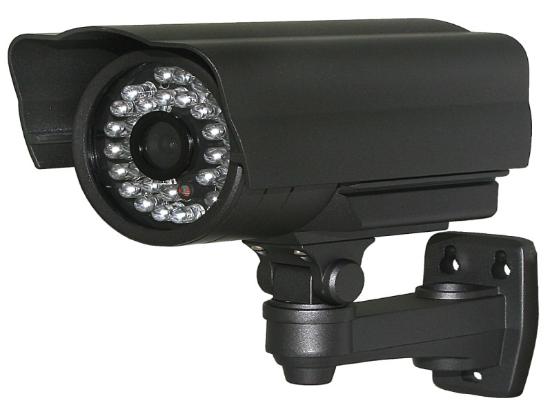

Системный анализ защиты от поджогов
Раньше люди сами смотрели за порядками и лесами. Они использовали ручки и блакноты. И они всю информацию говорили в пожарную часть.
Сейчас за всеми порядками и лесами следят разные датчики и видео-камеры.Робот наблюдатель отправляет информацию через Wi-Fi и цифровая пожарная часть принимает информацию.

В будущим сами камеры не изменятся, а сами механизмы очень даже изменятся.